Roter Teller
Serviere das Essen auf einem roten Teller. Darauf hebt sich das Essen deutlich ab.
„Ich habe schon gegessen.“121 einfache Tricks, die viele Familien nutzen. Probiere aus, was zu euch passt.
Serviere das Essen auf einem roten Teller. Darauf hebt sich das Essen deutlich ab.
„Ich habe schon gegessen.“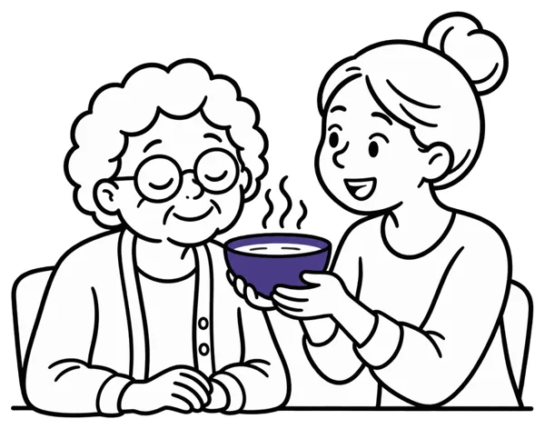
Biete das Essen zuerst zum Riechen an. Der Duft weckt oft die Lust auf Essen.
„Ich habe schon gegessen.“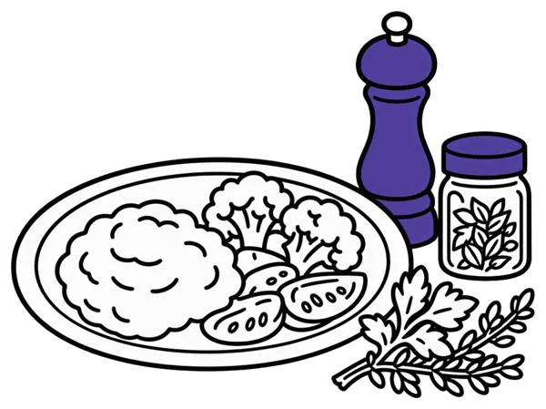
Würze ruhig etwas kräftiger, zum Beispiel mit Kräutern. Im Alter schmeckt man oft weniger.
„Ich habe schon gegessen.“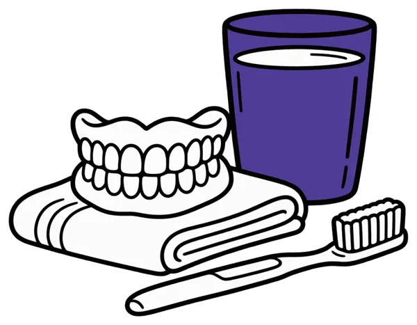
Fällt das Kauen schwer, schau nach Zähnen und Prothese. Drückt etwas, lass es in der Zahnarztpraxis nachsehen.
„Ich habe schon gegessen.“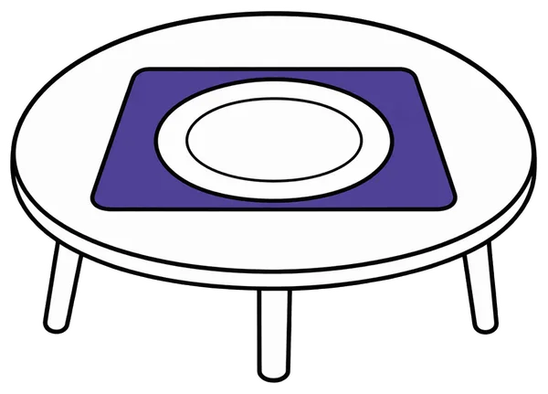
Lege eine einfarbige Unterlage auf den Tisch und räume Muster, Deko und Gläser weg. So bleibt nur das Essen im Blick.
„Ich habe schon gegessen.“Stelle nur Teller und Besteck hin. Das nächste Gericht kommt erst, wenn das erste weg ist.
„Ich habe schon gegessen.“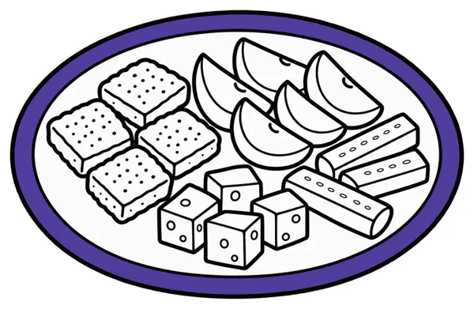
Schneide Brot, Obst und Gemüse in kleine Stücke zum Greifen. Dann braucht es kein Besteck.
„Ich habe schon gegessen.“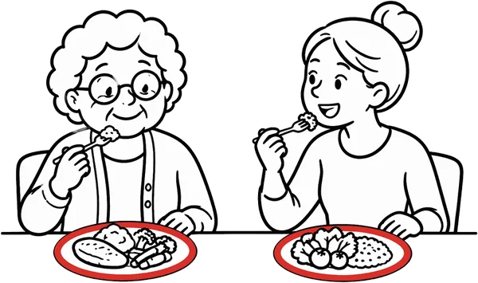
Setz dich dazu und iss selbst mit. Viele machen einfach nach, was sie sehen.
„Ich habe schon gegessen.“Lege statt Messer und Gabel nur einen Löffel hin. Das ist einfacher zu greifen.
„Ich habe schon gegessen.“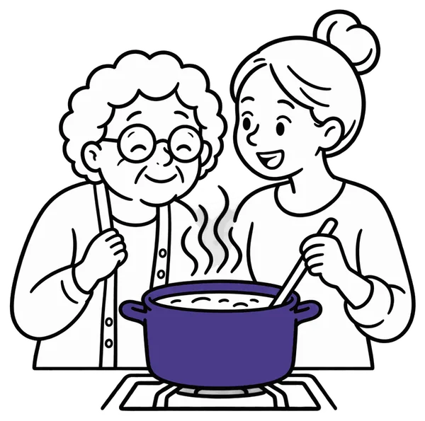
Koche etwas, das die Person von früher kennt. Der Duft aus der Küche macht oft neugierig.
„Ich habe schon gegessen.“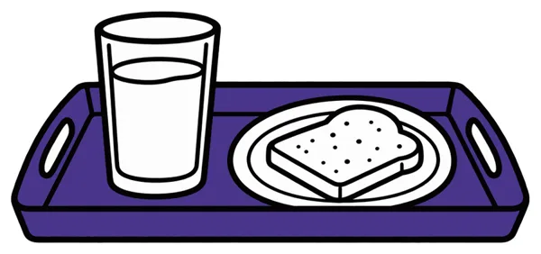
Fragt die Person nach dem Frühstück, obwohl sie schon gegessen hat, gib einfach noch etwas Kleines, zum Beispiel Saft oder einen Toast.
„Ich habe schon gegessen.“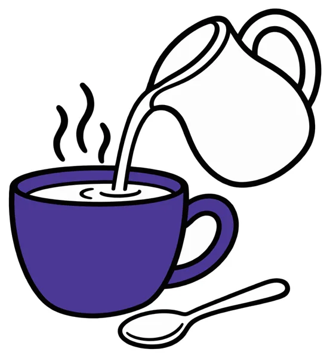
Prüfe Essen und Getränke selbst, bevor du sie hinstellst. Was zu heiß ist, merkt die Person vielleicht nicht.
„Ich habe schon gegessen.“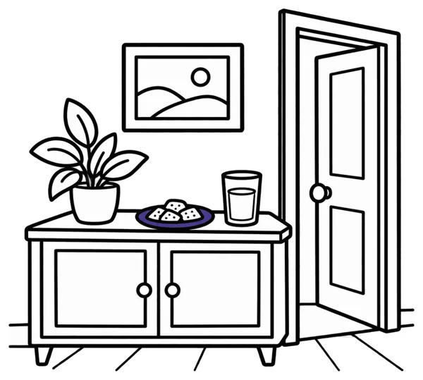
Steht die Person beim Essen immer wieder auf, stell kleine Häppchen und ein Getränk an ihren Weg.
„Ich habe schon gegessen.“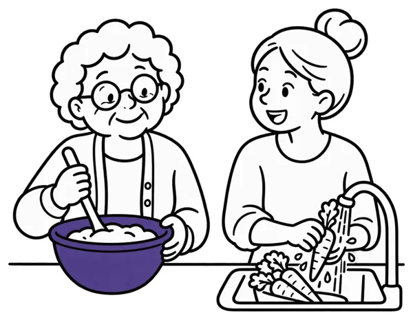
Lass beim Kochen mithelfen, zum Beispiel Gemüse waschen oder Teig rühren. So wird das Essen zur gemeinsamen Sache.
„Ich habe schon gegessen.“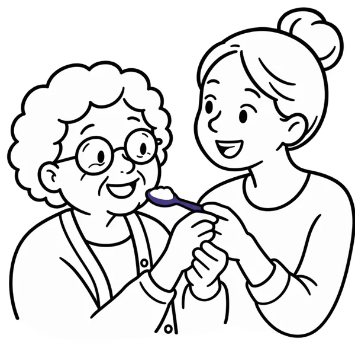
Leg deine Hand sanft um ihre Hand und führt den Löffel gemeinsam zum Mund. Oft macht die Hand dann von allein weiter.
„Ich habe schon gegessen.“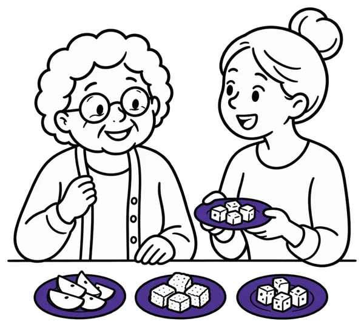
Biete über den Tag mehrere kleine Mahlzeiten und zwischendurch Obst an statt drei großer Teller.
„Ich habe schon gegessen.“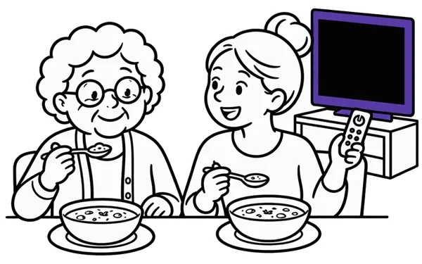
Schalte beim Essen Fernseher und Radio aus und setz dich ruhig dazu.
„Ich habe schon gegessen.“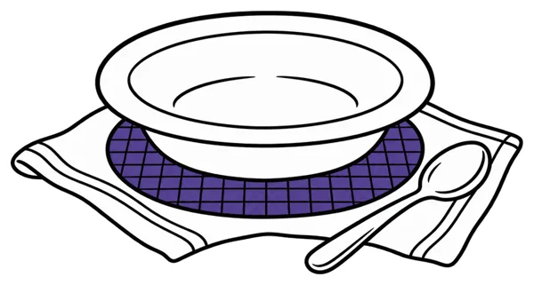
Stell Teller oder Schüssel auf eine rutschfeste Unterlage. Mit hohem Rand kommt das Essen leichter auf den Löffel.
„Ich habe schon gegessen.“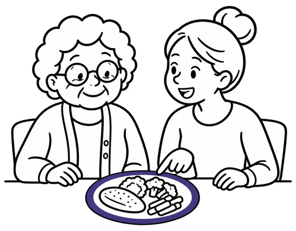
Sag, was auf dem Teller liegt und wo. Schau auch, ob die Brille auf der Nase und sauber ist.
„Ich habe schon gegessen.“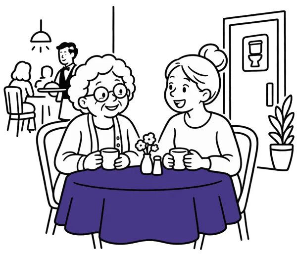
Bitte um einen ruhigen Tisch nahe der Toilette und setz die Person mit dem Rücken zum Trubel.
„Ich habe schon gegessen.“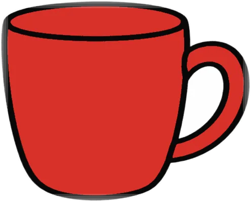
Nimm einen bunten Becher, der sich vom Tisch abhebt, und fülle ihn nur halb voll.
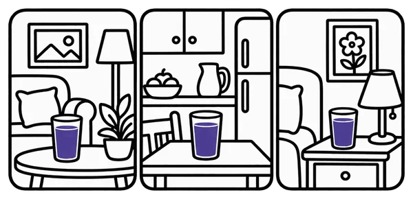
Stelle in jedem Raum ein gefülltes Glas oder eine Tasse hin, die man gut sieht.
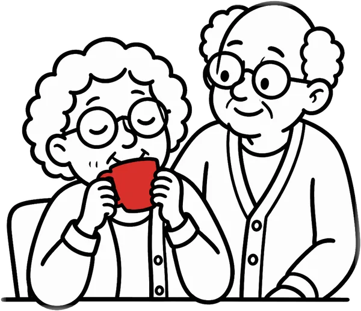
Nimm selbst ein Glas und stoße an. Gemeinsam trinken fällt leichter.
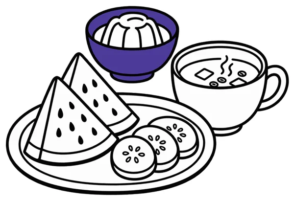
Biete Wasserreiches an: Melone, Gurke, Joghurt, Götterspeise oder eine klare Suppe.
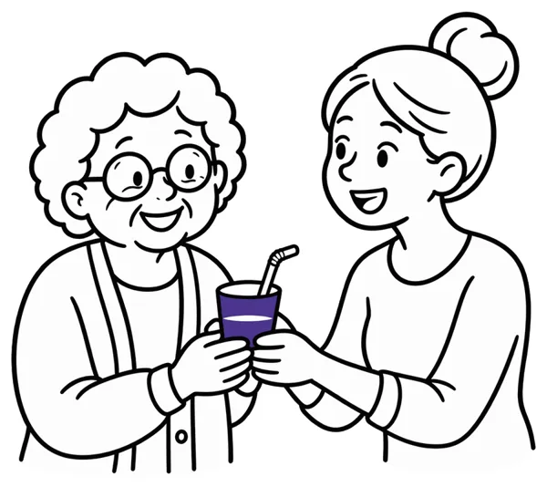
Füll Gläser nur halb und biete immer wieder einen kleinen Becher an, bei Bedarf mit Strohhalm.
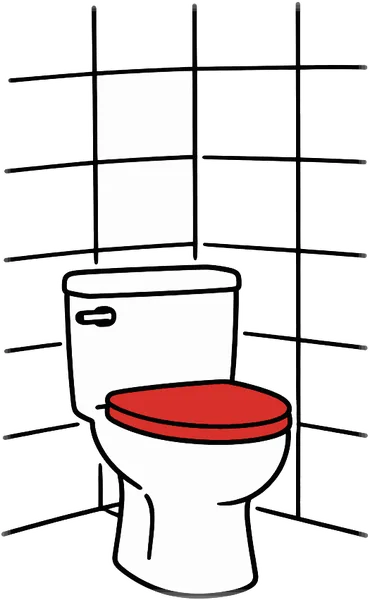
Ein farbiger Toilettensitz hebt sich vom weißen Becken ab. So findet man ihn leichter.
„Ich muss nicht aufs Klo.“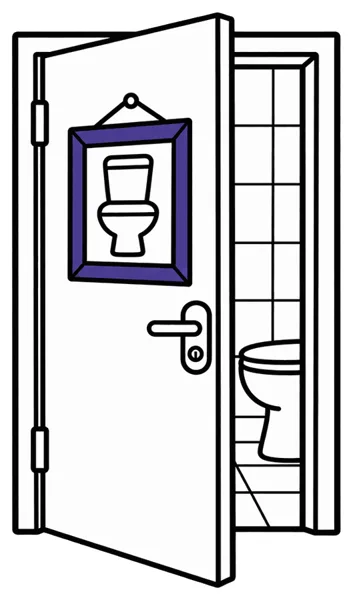
Hänge ein Bild einer Toilette in Augenhöhe an die Tür und lasse die Tür offen stehen.
„Ich muss nicht aufs Klo.“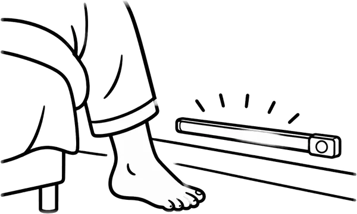
Ein Nachtlicht mit Bewegungsmelder zeigt nachts den Weg zur Toilette.
Nachts aufstehenWärme das Bad vor und lege ein großes Handtuch um die Schultern. Decke beim Waschen ab, was gerade nicht dran ist.
„Ich will nicht duschen.“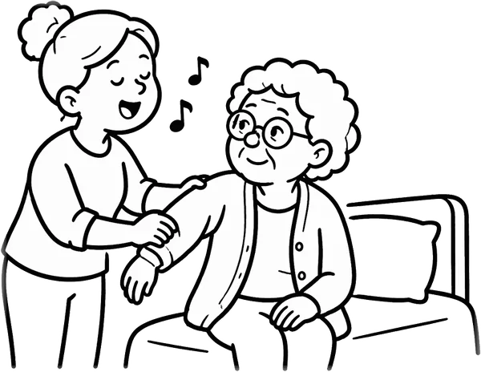
Summt oder singt zusammen ein Lied, das die Person mag. Das lenkt ab und macht es freundlicher.
„Ich will nicht duschen.“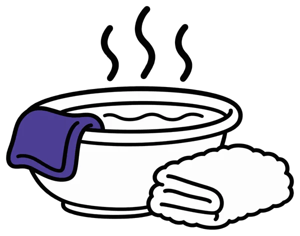
Beginne mit einem warmen Waschlappen an Händen und Gesicht. Der Rest folgt später oder ein anderes Mal.
„Ich will nicht duschen.“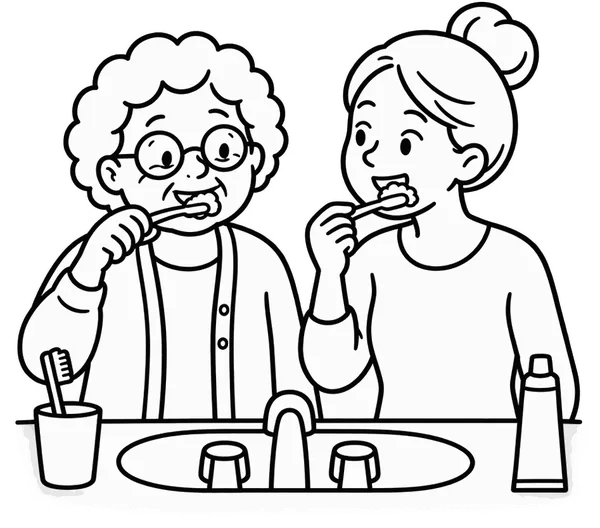
Putze dir neben der Person die Zähne. Sie macht oft einfach mit.
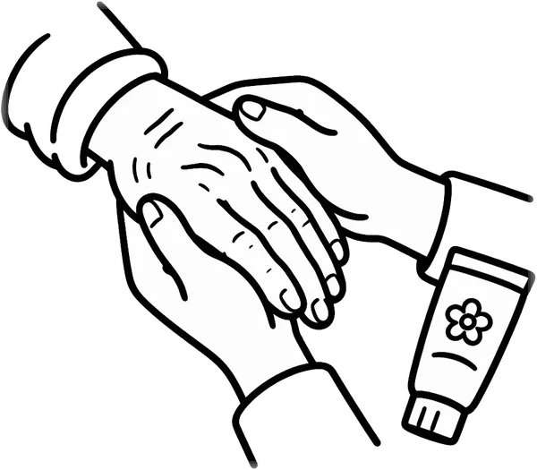
Creme der Person die Hände ein. Das ist eine ruhige Berührung, für die es keine Worte braucht.
„Lass mich in Ruhe!“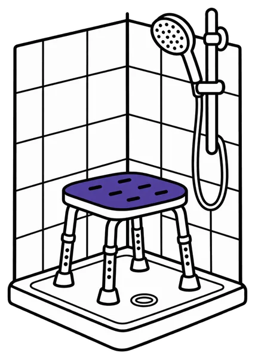
Mit einem Duschhocker kann die Person im Sitzen duschen. Das gibt Halt und ist weniger anstrengend.
„Ich will nicht duschen.“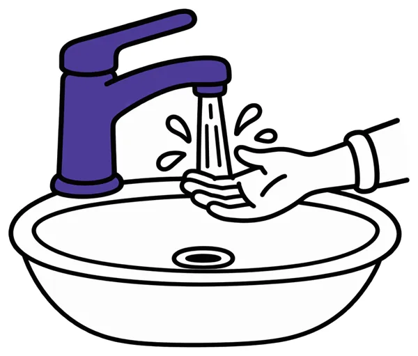
Fühle das Wasser vor dem Waschen selbst mit der Hand. Zu heißes Wasser merkt die Person vielleicht nicht.
„Ich will nicht duschen.“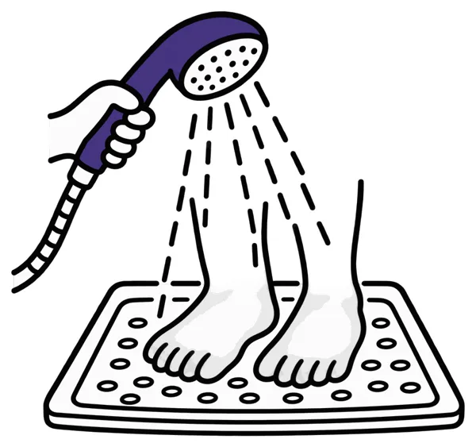
Dusche mit der Handbrause von den Füßen aufwärts, nicht von oben auf den Kopf.
„Ich will nicht duschen.“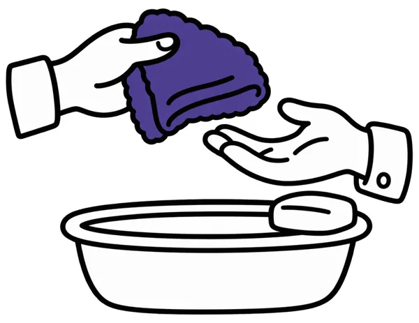
Gib Waschlappen, Seife oder Handtuch genau dann in die Hand, wenn sie dran sind. Dann weiß die Hand, was zu tun ist.
„Ich will nicht duschen.“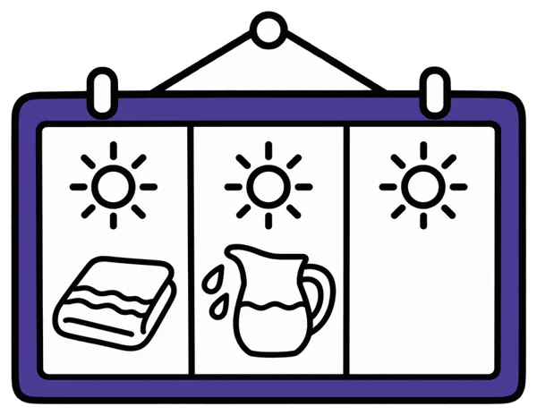
Wasche an manchen Tagen nur mit dem Waschlappen und an anderen nur die Haare. Es muss nicht immer alles auf einmal sein.
„Ich will nicht duschen.“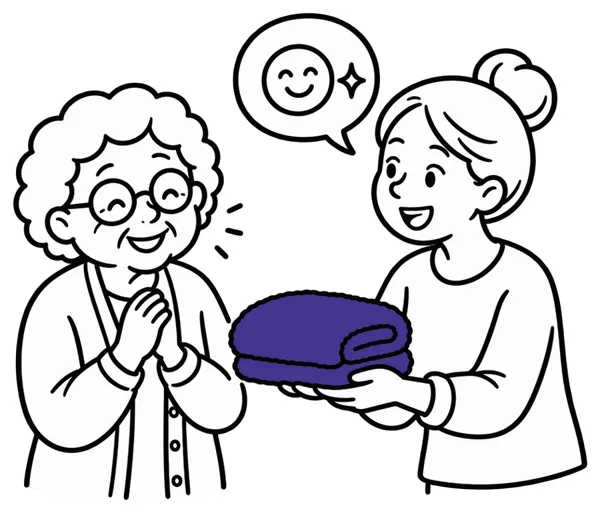
Sag lieber „Komm, wir machen uns frisch“ als „Du musst baden“. Frag dazu: jetzt oder nach dem Kaffee?
„Ich will nicht duschen.“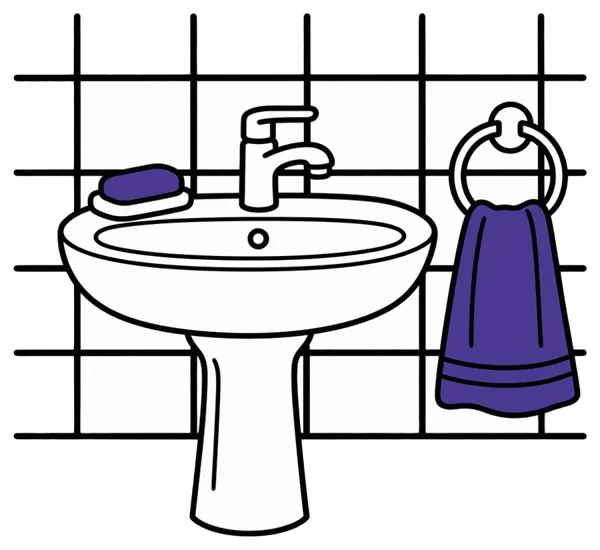
Nimm Seife und Handtuch in einer kräftigen Farbe, die sich vom weißen Waschbecken und von der Wand abhebt.
„Ich will nicht duschen.“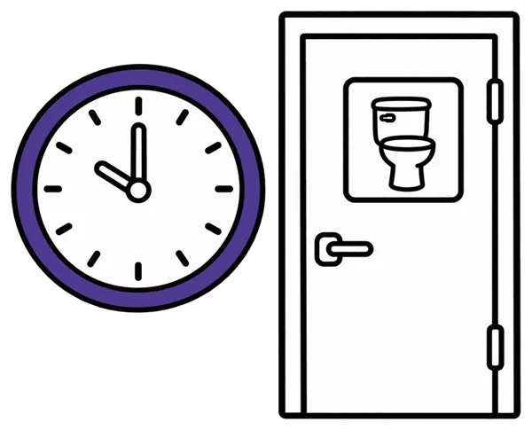
Geh zu festen Zeiten mit zur Toilette: nach dem Aufstehen, vor und nach dem Essen und vor dem Schlafen.
„Ich muss nicht aufs Klo.“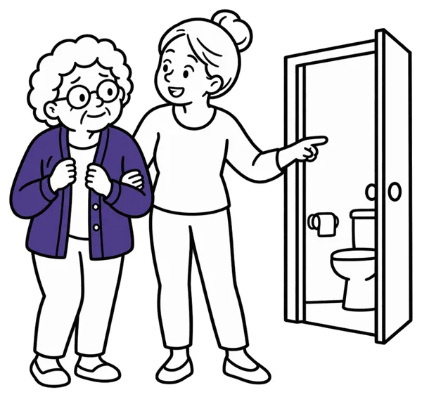
Zupft die Person an der Kleidung oder läuft unruhig hin und her, frag freundlich: „Sollen wir zur Toilette gehen?“
„Ich muss nicht aufs Klo.“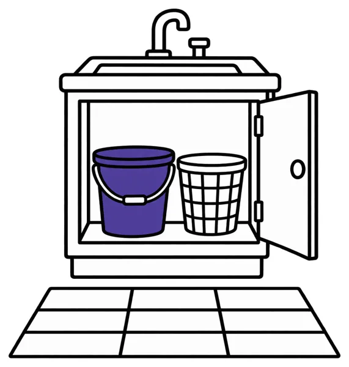
Räume im Bad weg, was wie eine Toilette aussehen kann, zum Beispiel Eimer, Wäschekorb oder Papierkorb.
„Ich muss nicht aufs Klo.“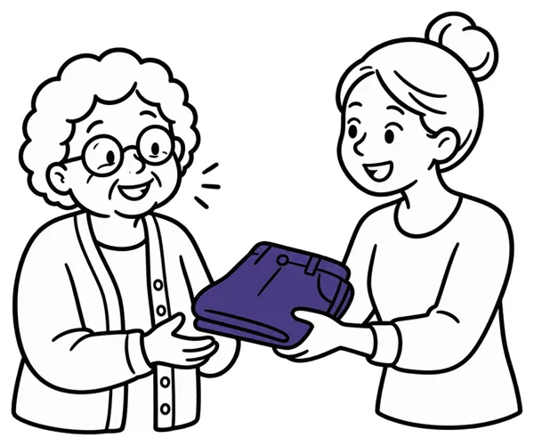
Bleib ruhig und freundlich, mach keine Vorwürfe und hilf gleich beim Umziehen. Sag einfach: „Das kann passieren.“
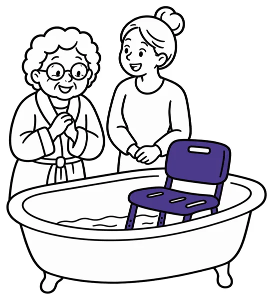
Lass erst wenig Wasser in die Wanne und füll nach, wenn die Person sicher sitzt.
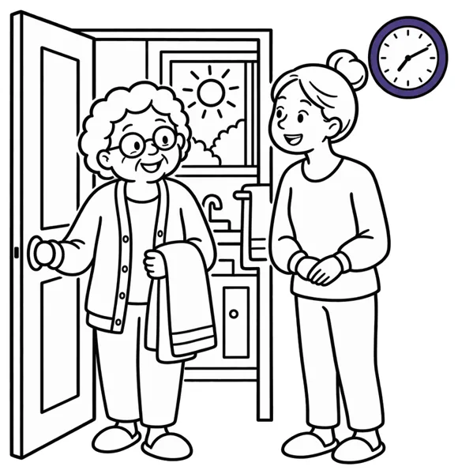
Wasche zu der Zeit, die die Person von früher kennt: Wer morgens geduscht hat, duscht morgens.
„Ich will nicht duschen.“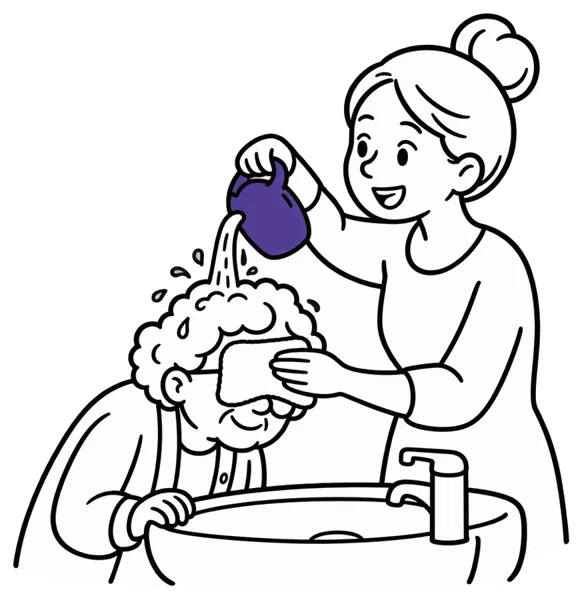
Spül die Haare mit einem Krug und halte einen Waschlappen vor die Augen. Statt Föhn lieber ein warmes Handtuch.
„Ich will nicht duschen.“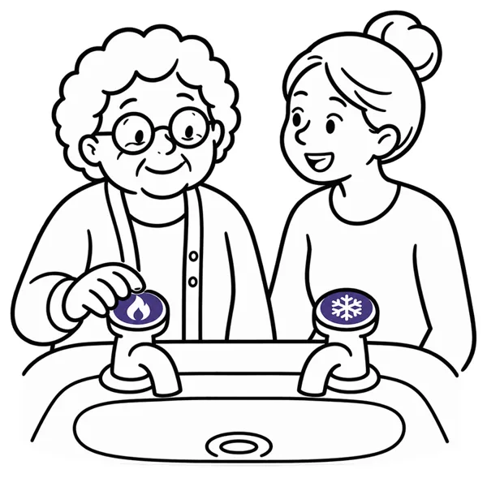
Kleb einen roten Punkt an den Warmwasserhahn und einen blauen an den Kaltwasserhahn.
„Ich will nicht duschen.“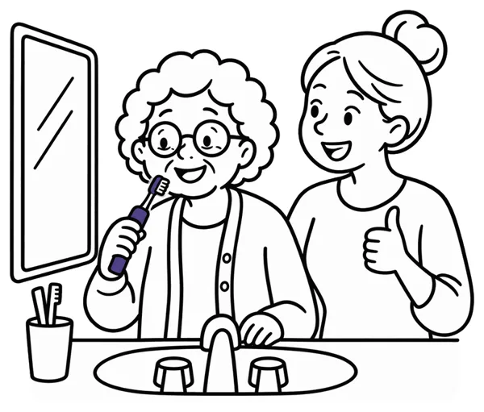
Eine elektrische Zahnbürste mit kleinem, weichem Kopf ist oft leichter zu halten.
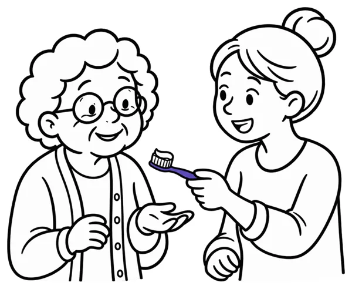
Gib die Zahnpasta schon auf die Bürste und reich sie der Person in die Hand.
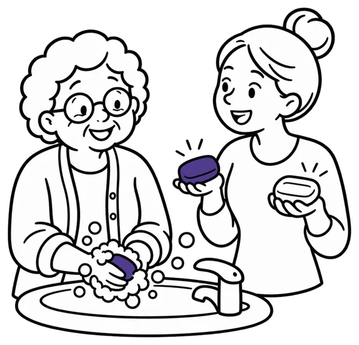
Lass die Person ihre Lieblingsseife und ihren Lieblingsduft aussuchen. Das macht das Waschen vertrauter.
„Ich will nicht duschen.“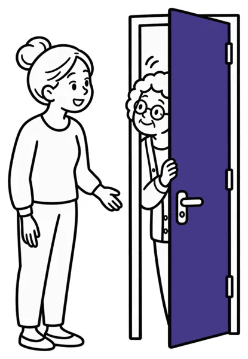
Frag, ob du vor der Toilettentür warten oder dabeibleiben sollst.
„Ich muss nicht aufs Klo.“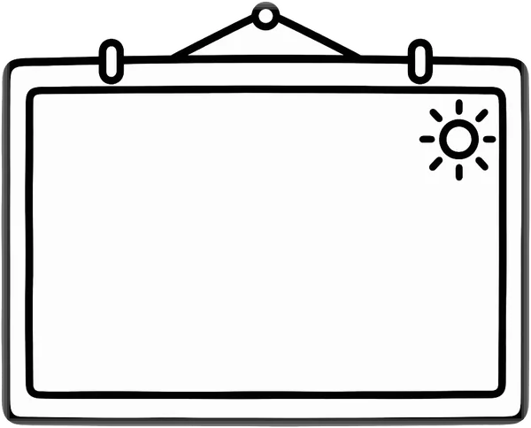
Hänge eine große Uhr auf, die Wochentag und Datum zeigt, dort wo die Person oft sitzt.
„Wann gehen wir?“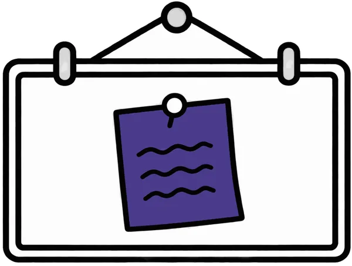
Schreibe die Antwort in großer Schrift auf einen Zettel. Bei der nächsten Frage zeigst du darauf.
„Wann gehen wir?“Schreibe auf eine Tafel, was heute ansteht, groß und mit wenigen Wörtern. Streiche Erledigtes gemeinsam durch.
„Wann gehen wir?“Schaut zusammen ein Album mit alten Fotos an. Bilder von früher geben Gesprächsstoff.
„Wo ist meine Mutter?“Stelle Fotos der Familie auf und schreibe die Namen in großer Schrift dazu.
„Wer sind Sie?“Klebe außen auf Schränke und Schubladen ein Bild von dem, was darin liegt.
„Ich ziehe mich nicht um.“Öffne morgens die Vorhänge und lasse Tageslicht herein. Das markiert den Beginn des Tages.
„Ich bleibe heute im Bett.“Gib Schlüsseln, Brille und Geldbeutel einen festen, sichtbaren Platz, zum Beispiel ein Schlüsselbrett.
„Du hast mein Geld gestohlen.“Zieh die Vorhänge zu, bevor es draußen dunkel wird, und mach drinnen helles Licht an.
„Es wird dunkel, ich muss los.“Nimm einfarbige Vorhänge, Teppiche und Bettwäsche. Starke Muster können verwirren.
Richte ein neues Zimmer so ein wie das alte, mit denselben Möbeln und Fotos.
Plane vormittags einen kurzen Spaziergang ein. Frische Luft und Tageslicht gehören für viele zum Tagesrhythmus.
Nachts aufstehenMache jeden Abend dasselbe in derselben Reihenfolge, zum Beispiel Tee, Waschen, Lieblingslied. Das gibt Halt.
„Es wird dunkel, ich muss los.“Schalte am Abend die Lampen an und ziehe die Vorhänge zu. So gibt es keine dunklen Ecken und keine Spiegelungen.
„Es wird dunkel, ich muss los.“Schalte den Fernseher aus und spiele leise Musik, die die Person kennt.
„Es wird dunkel, ich muss los.“Zieh abends den Schlafanzug an und tagsüber richtige Kleidung, auch wenn niemand kommt. So zeigt die Kleidung die Tageszeit.
Nachts aufstehenStell eine Uhr auf, die Tag oder Nacht zeigt, gut sichtbar vom Bett aus.
Nachts aufstehenBleib nachts ruhig, frag, was fehlt, und nenne sanft die Uhrzeit. Ein paar Schritte mitgehen hilft oft mehr als Streiten.
Nachts aufstehenLeg Baden, Termine und Ausflüge auf den Vormittag. Am späten Nachmittag fällt vieles schwerer.
„Da ist jemand im Zimmer.“Mach das Mittagessen zur größeren Mahlzeit und das Abendessen leicht.
„Es wird dunkel, ich muss los.“Halte das Schlafzimmer leise, dunkel und nicht zu warm, mit wenig Kram. Ein kleines Nachtlicht zeigt den Weg zur Toilette.
Nachts aufstehenStell ein Glas Wasser ans Bett. Wacht die Person nachts hungrig auf, reicht oft ein Glas Milch oder ein Joghurt.
Nachts aufstehenEin Armband oder eine Karte in der Jacke mit Namen und deiner Telefonnummer hilft, wenn die Person allein unterwegs ist.
„Es wird dunkel, ich muss los.“Hänge eine Glocke oder einen Türmelder an die Wohnungstür. So hörst du, wenn jemand hinausgeht.
„Es wird dunkel, ich muss los.“Mache ab und zu ein neues Foto der Person und halte es griffbereit. Sage den Nachbarn Bescheid.
„Es wird dunkel, ich muss los.“Hänge Mantel, Schuhe und Schlüssel in einen Schrank. Was man nicht sieht, erinnert nicht ans Gehen.
„Es wird dunkel, ich muss los.“Hänge ein Tuch über den Spiegel oder nimm ihn aus dem Raum.
Gib der Person ein Portemonnaie mit etwas Kleingeld, das sie behalten darf.
„Du hast mein Geld gestohlen.“Hänge in Sichtweite einen Haken auf. Die Jacke hängt dort sichtbar, und die Person holt sie selbst, wenn sie hinaus möchte.
Dunkle Teppiche und Matten können wie ein Loch aussehen. Nimm helle, einfarbige Beläge und nichts, was stark glänzt.
„Ich bleibe heute im Bett.“Streite nicht über den Weg. Geh ein Stück mit, frag, wohin es gehen soll, und lenke dann zurück nach Hause.
„Es wird dunkel, ich muss los.“Häng einen Vorhang vor die Haustür. Was nicht wie eine Tür aussieht, lädt weniger zum Gehen ein.
„Es wird dunkel, ich muss los.“Näh einen Zettel mit Namen und deiner Telefonnummer in Jacke und Handtasche.
„Es wird dunkel, ich muss los.“Erzähl vertrauten Nachbarn und Läden in der Nähe davon und gib ihnen deine Telefonnummer, wenn die Person einverstanden ist.
„Es wird dunkel, ich muss los.“Leg im Garten einen ebenen Rundweg ohne Stolperstellen an, wenn möglich mit einer Bank zum Ausruhen.
„Es wird dunkel, ich muss los.“Fährt die Person nicht mehr selbst, leg die Autoschlüssel an einen Platz, den sie nicht sieht.
„Ich will Auto fahren.“Leg einen Zettel hin, wo du bist und wann du zurückkommst, mit deiner Handynummer, zum Beispiel an die Haustür.
„Lass mich nicht allein.“Lege die Kleidung in der Reihenfolge zum Anziehen hin, das Erste oben.
„Ich ziehe mich nicht um.“Schuhe mit Klettverschluss und Hosen mit Gummibund lassen sich leichter anziehen.
„Ich ziehe mich nicht um.“Stelle die Schuhe so hin, dass die Spitzen zur Person zeigen und sie hineinschlüpfen kann.
Trägt die Person immer dasselbe, kauf das Lieblingsteil zwei- oder dreimal. Leg ein frisches bereit, während das andere in der Wäsche ist.
„Ich ziehe mich nicht um.“Schneide Etiketten heraus und nimm weiche Stoffe. Bleib beim gewohnten Waschmittel, dann riecht alles vertraut.
„Ich ziehe mich nicht um.“Zieh mehrere dünne Teile übereinander statt einer dicken Jacke. So lässt sich leicht etwas ausziehen.
„Ich ziehe mich nicht um.“Bequeme Kleidung für zu Hause statt Anzug oder Kostüm. So wirkt der Tag weniger nach Arbeit.
„Ich muss zur Arbeit.“Gib der Person eine Kiste mit ungefährlichen Dingen zum Sortieren, zum Beispiel Socken, Wäscheklammern oder Stoffreste.
„Ich muss zur Arbeit.“Bitte um Hilfe beim Falten von Handtüchern. Eine bekannte Handarbeit gibt das Gefühl, gebraucht zu werden.
„Ich muss zur Arbeit.“Setze dich dazu und halte die Hand der Person. Eine ruhige Berührung braucht keine Worte.
„Lass mich in Ruhe!“Spiele oder summe ein Lied aus der Jugend der Person. Alte Lieder kennen viele Menschen noch Wort für Wort.
„Lass mich in Ruhe!“Eine Decke mit Knöpfen, Bändern und Stoffen zum Anfassen beschäftigt unruhige Hände.
„Lass mich in Ruhe!“Richte einen Platz ein, an den man sich zurückziehen kann, mit Sessel, Decke und wenig Lärm.
Wird es unruhig, frag dich zuerst: Hunger, Durst, Toilette, zu kalt oder zu warm? Oft steckt etwas Einfaches dahinter.
„Lass mich in Ruhe!“Gib eine Aufgabe, die nach Arbeit aussieht: Tisch decken, Gemüse putzen, Staub wischen oder fegen.
„Ich muss zur Arbeit.“Lade jemanden mit Hund oder einem kleinen Kind zum Besuch ein und setz dich dazu.
Schreib zwei Wochen lang auf, wann die Unruhe kommt und was kurz vorher war. Oft zeigt sich ein Muster.
„Es wird dunkel, ich muss los.“Setz dich dazu, halte die Hand und atme selbst ruhig und langsam.
„Lass mich in Ruhe!“Lächle, winke und lade freundlich zu einem kurzen Plausch aufs Sofa ein.
Füll eine Kiste mit Dingen von früher, zum Beispiel Tuch, Brosche und Postkarten, und schaut sie gemeinsam an.
„Wer sind Sie?“Biete höchstens zwei Möglichkeiten an, zum Beispiel Tee oder Kaffee. Eine offene Frage überfordert schnell.
„Ich will nicht duschen.“Gehe auf Augenhöhe, sprich langsam und leise und nur einen Satz nach dem anderen.
„Lass mich in Ruhe!“Sage freundlich deinen Namen und wer du bist, auch zum fünften Mal am Tag.
„Wer sind Sie?“Nimm zu Terminen eine Lieblingsjacke, die Handtasche oder ein Foto mit. Das gibt Sicherheit an fremden Orten.
„Ich gehe nicht in die Tagespflege.“Lege Karten mit Bildern bereit, zum Beispiel Glas, Toilette, Bett. Die Person kann darauf zeigen, wenn Worte fehlen.
Verabschiede dich kurz und freundlich und schreibe die Abholzeit auf einen Zettel.
„Ich gehe nicht in die Tagespflege.“Bitte den Pflegedienst um feste Personen und feste Zeiten. Vertraute Gesichter machen es leichter.
Sag jeden Schritt einzeln: „Setz dich.“ „Hier ist die Seife.“ Warte, bis er getan ist, dann kommt der nächste.
„Ich will nicht duschen.“Streite nicht darüber, ob etwas stimmt. Geh auf das Gefühl ein und sag: „Ich bin da.“
„Wann gehen wir?“Klappt es gerade nicht, wechsle das Thema und versuch es später noch einmal. Nach einer Pause geht es oft leichter.
„Ich will nicht duschen.“Zeig vor dem ersten Besuch ein Foto der neuen Pflegekraft und sag ihren Namen.
Stell eine Frage und warte ruhig auf die Antwort. Eine kleine Pause ist in Ordnung.
„Wann gehen wir?“